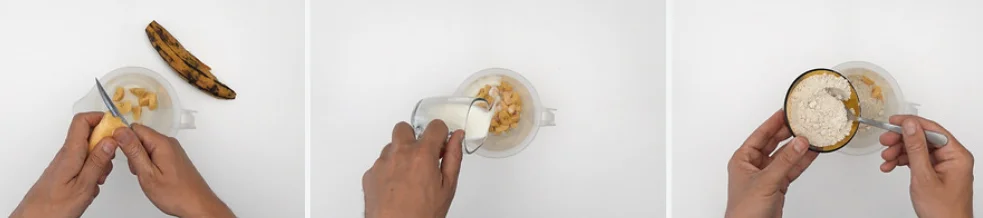
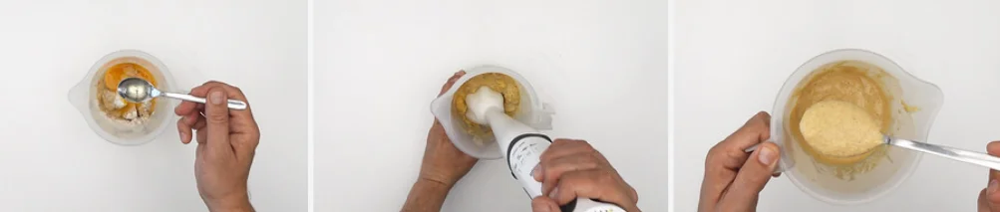
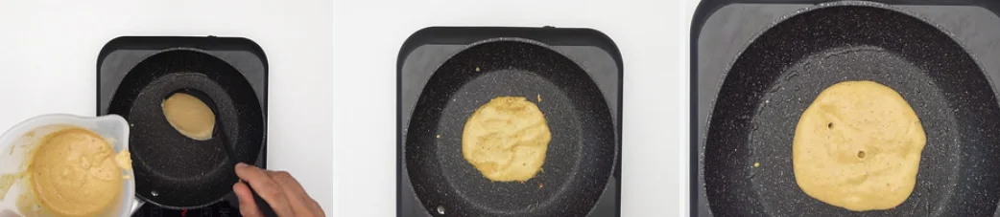

Inicio
Postre: Tortitas de avena y plátano

- 100 g. de harina de avena (a ser posible sin gluten)
- 1 plátano maduro
- 60 ml. de leche sin lactosa LARSA
- 1 huevo M de Pazo de Vilane
- 1 cucharada de azúcar, panela o azúcar de caña (es opcional, pues el plátano ya endulza nuestras tortitas)
- 1 nuez de mantequilla o 40 ml. de aceite de oliva virgen extra
- 1 cucharadita de esencia de vainilla
- 5 g. de levadura química en polvo
- Para acompañar (opcional): 50 ml. de chocolate líquido, sirope de arce, fruta cortada... fresas, arándanos, frambuesas...
Cómo hacer tortitas de avena y plátano
- En un vaso de batidora o de un robot, vamos añadiendo todos los ingredientes. Comenzamos por la harina de avena. Picamos el plátano en trozos pequeños y añadimos. Vertemos la leche, y mezclamos bien con un tenedor (o similar).

- Seguimos con el resto: la esencia de vainilla, el huevo, la levadura química, una pizca de sal y la cucharada de azúcar. En el caso de que el plátano esté muy maduro, podemos no añadirlo. Volvemos a mezclar.
- Trituramos con la batidora, robot o túrmix. Hasta obtener una masa homogénea, ligeramente espesa y sin grumos.

Preparación y presentación final
- En una sartén, a fuego medio-alto, derretimos un poquito de mantequilla o añadimos unas gotas de aceite de oliva virgen La extendemos bien por toda la superficie y esperamos a que se caliente. El aceite de oliva virgen extra es una opción más saludable y por si tenéis problemas con la lactosa en casa, aunque ahora también venden mantequilla sin lactosa.
- Cogemos un poco de masa, por ejemplo medio cucharón. Vertemos la masa en el centro de la sartén y dejamos que se extienda. Cocinamos a fuego medio, hasta que veamos que surgen burbujas en la superficie.

- Damos la vuelta y cocinamos otros 20/30 sg. Para que así estén doraditas por ambos lados. Repetimos el proceso con el resto de la masa. Con estas cantidades hemos hecho unas 8 tortitas, aunque todo depende del grosor que queráis para las tortitas.
- Finalmente, hecha nuestra torre de panqueques, bañamos con el chocolate líquido. Servimos en la mesa, acompañando de algún complemento como unos frutos rojos o unos frutos secos, para darle un contrapunto crujiente.

Volver arriba